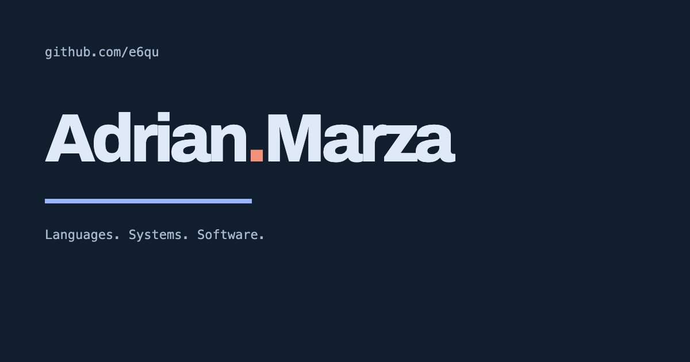

Sample talk
How e6qu.github.io counts source and test lines across every public project, every day.
/ e6que6qu.github.ioDesign system demo deck
Agenda
01
The problem
Public, non-fork projects only; research and throwaway repos are excluded
Approach
Featured project
Deterministic testing for Linux services in microVMs. Each featured project gets its own illustration and palette.
Rust · PythonAGPL-3.0
def is_test(path):
p = Path(path)
if any(part.lower() in TEST_DIRS for part in p.parts[:-1]):
return True
return bool(re.search(
r'(^test[_.-]|[_.-]test\.|[_.-]tests\.|[_.-]spec\.|Tests?\.java$|Tests?\.cs$)',
p.name, re.IGNORECASE))def visit(node):
attrs = [] 1
for child in node.named_children:
if child.type == 'attribute_item':
attrs.append(child)
continue
is_test_attr = cfg_test(attrs) 2
if is_test_attr and child.type.endswith('_item'):
ranges.append(...) 3
else:
visit(child)$ python3 scripts/build.py $ python3 -m http.server 8000 --directory _site Serving HTTP on 0.0.0.0 port 8000 (http://0.0.0.0:8000/) ... ✓ built from the checked-in data.json snapshot
Pipeline
Snapshot
| Language | Projects | Share |
|---|---|---|
| Rust | 12 | 38% |
| Go | 11 | 34% |
| TypeScript | 11 | 34% |
| Python | 6 | 19% |
By the numbers
One Python build, no framework, self-hosted fonts.

Repository code is only read; it is never built or executed.— README.md
Switching to the browser
✳
Then: what's next
Thank you